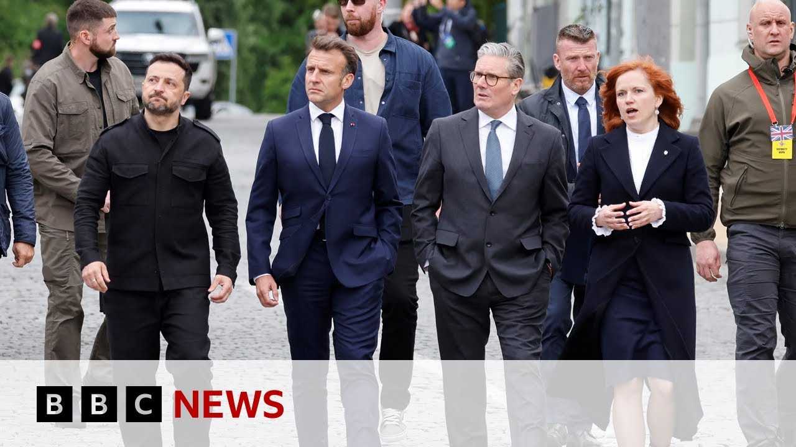

来B站一起耍【Global每日英语简报】
【英国、法国、德国和波兰领导人周六在美国总统特朗普支持下，同意从5月12日起实施无条件30天停火，并威胁若普京拒绝遵守将实施新的大规模制裁。】
Summary: Leaders of Britain, France, Germany, and Poland have agreed on Saturday to an unconditional 30-day ceasefire from the 12th of May with the backing of US President Donald Trump.
摘要： 英国、法国、德国和波兰领导人周六在美国总统特朗普支持下，同意从5月12日起实施无条件30天停火。

⏱️ Estimated Reading Time: 9 min
They also threatened President Vladimir Putin with new massive sanctions if he failed to comply.
他们还威胁称，若普京总统拒绝遵守，将实施新的大规模制裁。
The announcement was made by the leaders of Britain, France, Germany, Poland, and Ukraine after a meeting in Kiev during which they held a phone call with Mr. Trump.
这一声明由英国、法国、德国、波兰和乌克兰领导人在基辅会晤后发布，期间他们与特朗普通了电话。
Our chief political correspondent, Henry Zeman, is following the visit to Kiev.
本台首席政治记者亨利·泽曼正在跟进此次基辅之行。
This is a visit that's been drenched in symbolism coming as it does at the end of a week where we've been commemorating the end of war in Europe.
此次访问充满象征意义，正值欧洲战争结束纪念周尾声。
These are European leaders visiting a war in Europe.
这是欧洲领导人亲临一场欧洲战争。
It's also a symbolic response to the world leaders who joined Vladimir Putin in Moscow yesterday.
也是对昨日齐聚莫斯科与普京会面的各国领导人的象征性回应。
But over the course of this morning, it's become clear that Sakir Starmer and his fellow leaders are trying to do more than just the symbolic.
但今晨事态表明，斯塔默及其同僚试图超越象征意义。
They are trying to extract an agreement for a 30-day ceasefire from Russia.
他们正试图迫使俄罗斯同意30天停火。
They've just held a virtual call of the so-called coalition of the willing.
他们刚与所谓"意愿联盟"进行了视频通话。
After that, they phoned up Donald Trump, all involved, including the US president, support that proposal.
随后他们致电特朗普，所有参与者（包括美国总统）均支持该提议。
But does Vladimir Putin?
但普京会吗？
Because if he doesn't, the accusation may be that this is just yet more symbolism.
因为若他拒绝，这可能被指责为又一场作秀。
Henry Zeman, well, those European leaders have been giving a press conference after their meetings, and here's what President Zilinski said.
亨利·泽曼报道，欧洲领导人会后举行记者会，泽连斯基总统表示：
We are working on various levels with the United States of America and Ukraine has very productive dialogue with President Trump and the connection with the team and we are grateful for that and we thank the teams of the leaders and all those present here who are personally working and in constant touch with the United States of America.
我们正与美国多层面合作，乌克兰与特朗普总统及其团队保持高效对话，对此我们深表感激，并感谢各国领导人团队及在场所有与美国保持密切联络的工作人员。
The partners are in permanent communication with Washington.
盟友们与华盛顿保持持续沟通。
We've just uh spoken together with the President Trump and we have agreed our joint view our further steps.
我们刚与特朗普总统通话，就共同立场和后续步骤达成一致。
A full and unconditional ceasefire is much needed.
当前亟需全面无条件停火。
The accountability for refusal is needed.
必须追究拒绝停火的责任。
We again together lay the foundation for peace and I thank everybody who supports the dignified end to this war.
我们再次共同奠定和平基础，感谢所有支持体面结束战争的人士。
Well, the UK Prime Minister Saky Star said today's announcement showed that Europe was stepping up.
英国首相斯塔默称今日声明表明欧洲正在行动。
All of us here together with the US are calling Putin out.
我们全体与美国共同要求普京表态。
If he's serious about peace, then he has a chance to show it now by extending the V-Day pause into a full unconditional 30-day ceasefire with negotiations to follow immediately once a ceasefire is agreed.
若他真心追求和平，现在有机会通过将胜利日休战延长为30天无条件停火来证明，停火后立即展开谈判。
No more ifs and buts, no more conditions and delays.
不再有借口、条件或拖延。
Putin didn't need conditions when he wanted a ceasefire to have a parade and he doesn't need them now.
普京当初为举行阅兵要求停火时未提条件，现在也不该需要。
Ukraine has shown the willingness to engage again and again.
乌克兰已一再展现诚意。
But again and again Putin has refused.
但普京却一再拒绝。
So we are clear all five leaders here all the leaders on the meeting we just had with the coalition of the willing an unconditional ceasefire rejecting Putin's conditions and clear that if he turns his back on peace we will respond working with President Trump with all our partners we will ramp up sanctions and increase our military aid for Ukraine's defense to pressure Russia back to the table.
因此我们五位领导人及"意愿联盟"会议全体成员明确要求无条件停火，拒绝普京的条件，并表明若他背弃和平，我们将与特朗普总统及盟友共同应对，升级制裁并增加对乌军援，迫使俄罗斯回到谈判桌。
Sec. Let's speak to Jim Townsend, former US Deputy Assistant Secretary of Defense for European and NATO uh policy.
接下来连线美国前副助理防长（负责欧洲及北约政策）吉姆·汤森。
Mr. Townsen, thank you very much for joining us here on BBC News.
汤森先生，感谢接受BBC新闻采访。
How hopeful are you that this is going to lead to a ceasefire on Monday?
您对周一实现停火有多大希望？
Well, I think it's the I'm I'm I'm I'm hopeful only because this is the biggest push that I think we have made with the US and with this uh European leaders uh to include threatening, you know, sanctions or additional assistance uh to Ukraine if the Russians don't come to the table.
我认为这是美欧领导人迄今最大力度的施压，包括威胁若俄方拒绝谈判将实施制裁或增加对乌援助。
So, in terms of a push in terms of who's involved and Trump sounds like he's quite involved over the phone with the leadership and with Zalinski, this is the biggest attempt.
就参与方而言，特朗普似乎通过电话与各国领导人及泽连斯基深度互动，这是最大规模的尝试。
Uh, and so let's see if it works.
让我们拭目以待。
We saw though um in Moscow with the um victory day commemorations marking 80 years since World War II ended in Europe that China, Venezuela, Venna, Russia, Slovakia are all present.
但我们在莫斯科看到，纪念二战欧洲战场结束80周年的胜利日活动有中国、委内瑞拉、维也纳、俄罗斯、斯洛伐克出席。
Vladimir Putin isn't as isolated as we were hearing from our security correspondent as the West would like.
普京并不像西方期望或安全记者所述那般孤立。
Well, he is uh he's not as isolated as as he had been in the past.
他确实不像过去那样孤立。
Uh but the friends he has are are not exactly of the kinds of friends you'd want to have.
但其盟友并非理想类型。
Brazil is part of this as well.
巴西也在其中。
Venezuela, as you pointed out, uh I guess I'm not surprised at seeing that.
如您所指委内瑞拉，我对此并不意外。
Uh but frankly, uh he's not quite out into the uh open the way he wants to be.
但坦白说，他尚未如愿获得国际认可。
And he's got a lot of sanctions on him and sanctions to come.
现有及即将实施的制裁仍困扰着他。
And there's a clock ticking in Moscow in terms of their economy uh and in terms of their ability to continue to put manpower into the meat grinder, if you will, of Ukraine.
莫斯科正面临经济倒计时，以及持续向乌克兰"绞肉机"投入兵力的能力问题。
So, I think Putin does not have as much time as he thinks he does.
因此我认为普京的时间并不如他想象的充裕。
We've seen President Trump somewhat flip-flop over Ukraine and and how sympathetic he's been at times towards Vladimir Putin.
我们看到特朗普总统在乌克兰问题上态度反复，有时对普京表现出同情。
How will he be viewing what's been happening with these European leaders today in Kiev where we hear there is now a consensus of 20 countries.
他如何看待今日20国达成共识后欧洲领导人在基辅的行动？
That's right. And major countries as well.
没错，且都是重要国家。
I mean this is NATO and the EU were part of that as well.
北约和欧盟也参与其中。
Uh so I think he is looking on this certainly as Europe stepping up.
因此我认为他视此为欧洲的积极行动。
Uh Europe is involved in this.
欧洲已深度参与。
Uh they've got skin in the game.
他们切身投入。
Uh both institutionally as well as the nations themselves.
既有机构层面也有各国自身。
uh they are also threatening sanctions and assistance going to Ukraine if the Russians don't play ball.
他们还威胁若俄罗斯不配合，将对乌实施制裁与援助。
So certainly Trump sees that he's got a good partner across the Atlantic partner that he's going to need and that's going to be helpful and are taking the lead particularly in this instance.
因此特朗普必然视大西洋对岸为需要且有益的合作伙伴，尤其在此事上发挥主导作用。
So uh my feeling is that uh that this is only going to help the US and the European nations, NATO, the EU to work together in the future because I think Trump sees number one he needs it and number two Europe can be effective.
我认为这将促进美国与欧洲国家、北约、欧盟未来合作，因为特朗普既需要盟友，也看到欧洲能发挥作用。
Jim Townsen, former US Deputy Assistant Secretary of Defense for European and NATO policy. Thank you very much for your insights and there's much more on those talks that have been taking place in Ukraine.
美国前副助理防长（负责欧洲及北约政策）吉姆·汤森，感谢您的见解。关于乌克兰会谈的更多内容，
On the BBC News website, uh there's a live page up and running which will fill you in all of the details of what has come out of that meeting of those uh leaders.
BBC新闻网站设有实时页面，完整呈现领导人会议详情。
The spicy case.
辛辣事件。